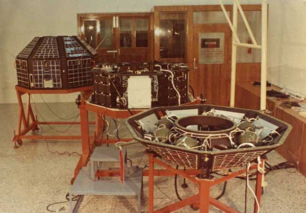

First Satelite of India - ARYABHATTA

Aryabhata was India's first satellite,[1] named after the famous Indian astronomer.[6] It was launched on 19
April 1975[1] from Kapustin Yar, a Soviet rocket launch and development site in Astrakhan Oblast using a Kosmos-3M
launch vehicle. It was built by the ISRO, and launched by the Soviet Union as a part of the Soviet Interkosmos
programme which provided access to space for friendly states.
Launch
It was launched by India on 19 April 1975[1] from Kapustin Yar, a Russian rocket launch and development site in
Astrakhan Oblast using a Kosmos-3M launch vehicle. It was built by the Indian Space Research Organisation (ISRO).The
launch came from an agreement between India and the Soviet Union directed by UR Rao and signed in 1972. It allowed
the USSR to use Indian ports for tracking ships and launching vessels in return for launching various different
Indian satellites.[7]
On 19 April 1975, the satellite's 96.46-minute orbit had an apogee of 619 kilometres (385 mi) and a perigee of 563
kilometres (350 mi), at an inclination of 50.7 degrees.[5][2] It was built to conduct experiments in X-ray
astronomy, aeronomics, and solar physics. The spacecraft was a 26-sided polyhedron 1.4 metres (4.6 ft) in diameter.
All faces (except the top and bottom) were covered with solar cells.[4] A power failure halted experiments after
four days and 60 orbits with all signals from the spacecraft lost after five days of the operation.[citation needed]
Spacecraft mainframe remained active till March 1981.[2] Due to orbital decay the satellite entered Earth's
atmosphere on 11 February 1992.[2]
Legacy
- It was named after the 5th century astronomer and mathematician from India by Aryabhatta.[8]
- The satellite's image appeared on the reverse of Indian two rupee banknotes between 1976 and 1997 (Pick
catalog).[4]